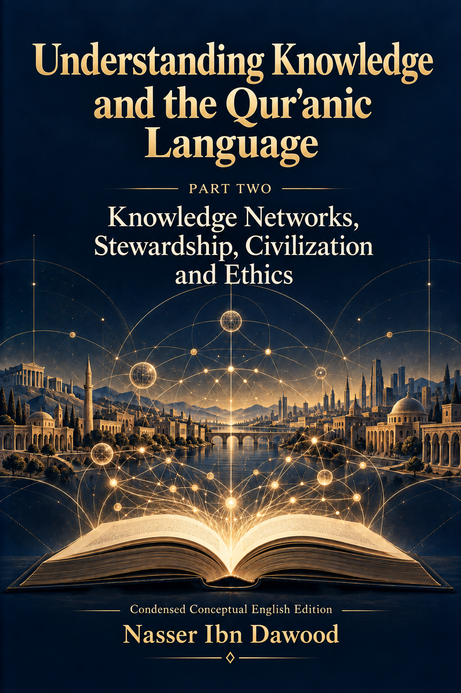

119. Understanding Knowledge and the Qurʾanic Language — Part Two: Knowledge Networks, Stewardship, Civilization and Ethics

A condensed conceptual adaptation exploring knowledge networks, stewardship, civilization and ethics, epistemic provision, artificial intelligence, knowledge governance, and a proposed network charter. It distinguishes Qurʾanic evidence from interpretive proposals and hypothetical applications; the Arabic edition remains the primary source.
This is a condensed conceptual English adaptation, not a word-for-word translation. The Arabic edition remains the primary source for detailed analysis and references.
قراءة PDF داخل الموقع / Read the PDF on this website
جارٍ تجهيز القارئ… / Preparing the reader…
Book Summary, Table of Contents & Excerpt
Understanding Knowledge
and the Qurʾanic Language
Part Two
Knowledge Networks Stewardship
Civilization and Ethics
Nasser Ibn Dawood
Condensed conceptual English edition
2026
Contents
I The Global Knowledge Manifesto
II Translator’s Note
Introduction
Part One
Chapter 1 How Knowledge Takes Shape
Chapter 2 From the Pen to the Algorithm
Chapter 3 Epistemic Provision and Better Research
Part Two
Chapter 4 Knowledge Forms the Responsible Human Being
Chapter 5 Wisdom and the Balance of Capability
Chapter 6 Regularities Resources and Sound Civilization
Part Three
Chapter 7 The Architecture of Shared Knowledge
Chapter 8 Artificial Intelligence Within the Network
Chapter 9 Turning Knowledge Into Practical Service
Part Four
Chapter 10 Ethics Throughout Inquiry
Chapter 11 Governing Knowledge and Correcting Its Course
Chapter 12 A Practical Programme for Stewardship
Conclusion
Questions for Further Research
A Proposed Charter for Knowledge Networks
Key Terms
Research Material and Source Guide
I The Global Knowledge Manifesto
Knowledge is a universal right. The author firmly believes that wisdom should not be locked behind paywalls or language barriers.
Global Access Policy: All books in this library are available for free in multiple digital formats (PDF, HTML, DOCX, TXT).
The Digital Library: As of early 2026, the collection hosts 236 volumes (118 in Arabic and 118 in English), fully optimized for AI-assisted research and digital archiving.
Official Platforms: Main Website: nasserhabitat.github.io/nasser-books/
GitHub: nasserhabitat/nasser-books